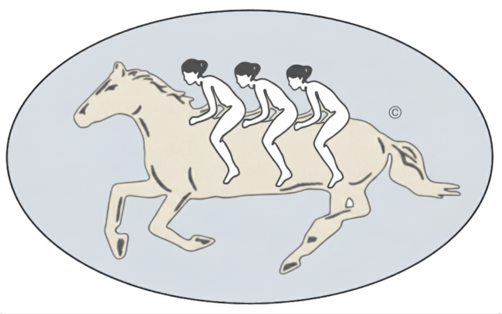

Routes a product question to the method it deserves, then runs that method with the checks that stop it returning a confident wrong number.
A product data science system, packaged as agent skills. A question arrives; gallop routes it. One lookup against what the team already knows, three questions, and one gate that asks whether the metric can be trusted at all.
Most questions leave without an analysis, and that is the point. The ones that stay get the method that fits how treatment was assigned, sized from the effects this metric has actually produced rather than from a number that would be nice, and read out with the checks that separate a real result from a confident wrong one: the sample ratio, the exposure log, the sequential bound, the shrinkage toward the prior. What the answer teaches is written back before the ticket closes, so the next question starts smaller.
Three method buckets, a floor underneath them, a memory above them, and a layer of judgment on top. Each bucket has its own question, its own output, and its own failure mode. That test is what fixes the count at three.
| Bucket | Asks | Hands back | Fails by |
|---|---|---|---|
| Description | What happened? | A hypothesis | Being mistaken for causation |
| Causation | Did this change cause that? | An effect size | An invalid comparison group |
| Prediction | What will happen? Who gets what? | A forecast, a ranking, an allocation | Breaking the moment you intervene |
Experimentation and causal inference share all three, so they are one bucket separated only by who did the randomising: you, or the world.
A question enters at the left and leaves as a decision. Measurement is a foundation rather than a phase; theory is a ceiling rather than a report. With a field guide to every object on the page.
One lookup, three questions and one gate, asked before you open a query editor. Each exit names what you hand back. Takes about a minute, and it is the whole discipline.
| Skill | Position | What it decides |
|---|---|---|
| routing-questions | Routing | Whether this becomes work at all, and which of the other five it becomes |
| defining-metrics | Floor | A metric turned into a computation, a source of truth, and a statement of how it will be gamed |
| designing-experiments | Causation | The four choices that cannot be repaired after launch |
| reading-experiments | Causation | Whether the result is a result |
| choosing-causal-designs | Causation | Which design fits, when assignment already happened |
| writing-readouts | Ceiling | The belief, not just the number, and where it gets filed |
Not an experimentation platform. It does not assign traffic, hold flags, or replace your warehouse. It assumes those exist and writes the part that decides whether the number they produced is true.